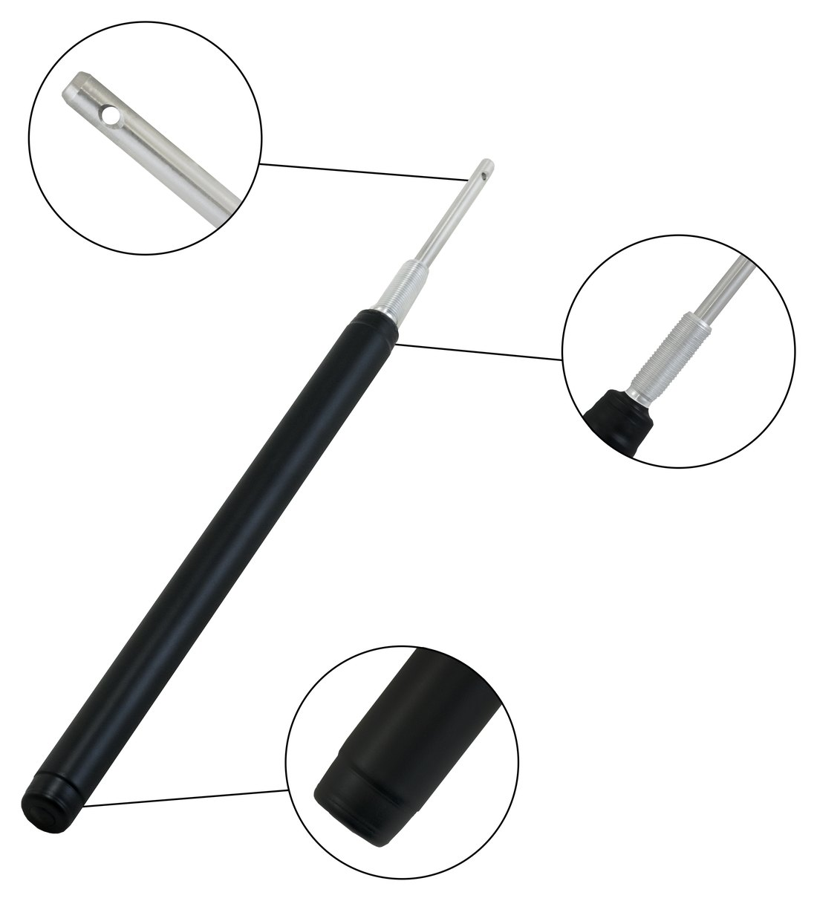
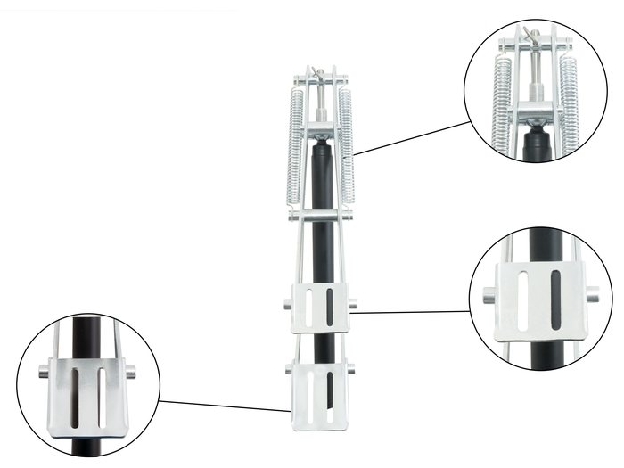

Ersatzzylinder
Universeller wärmegetriebener Zylinder für jeden automatischen Gewächshausöffner.

Der Zylinder ist das Herz jedes automatischen Öffners und das Teil, das irgendwann ersetzt werden muss. Unserer passt zu jedem Öffner am Markt, was ihn zum praktischen Ersatzteil für Händler und zum Serviceartikel für Gewächshausbesitzer macht.
Er liefert bis zu 20 kg Kraft bei 65 mm Hub und aktiviert sich zwischen 16 °C und 30 °C. Das Gehäuse ist aus Aluminium gedreht, der Kolben aus Edelstahl, die Oberfläche schwarz.
Wir fertigen die Zylinder selbst, auf denselben Drehautomaten wie den Rest des Öffners, daher sind die Daten von Charge zu Charge gleich.
Technische Daten
| Kraft | bis 20 kg |
|---|---|
| Hub | 65 mm |
| Arbeitsbereich | 16–30 °C |
| Gehäuse | Aluminium, schwarz |
| Kolben | Edelstahl |
| Kompatibilität | alle automatischen Öffner |
| Garantie | 2 Jahre |
Wichtigste Merkmale
Passt zu jedem Öffner
Universeller Ersatz, egal welchen Öffner Sie einsetzen.
Eigenfertigung
Auf unseren Drehautomaten gefertigt, jede Charge nach derselben Spezifikation.
Aluminium und Edelstahl
Leicht, korrosionsbeständig, für den Einsatz im Freien.
Aktivierung 16–30 °C
Exakt auf den Fensteröffner abgestimmt.
Produktansichten
Erst testen, dann bestellen.
Händler und Gewächshaushersteller erhalten von uns ein kostenloses Musterset. Montieren Sie es, lassen Sie es eine Saison laufen, und dann sprechen wir direkt über Mengen und Preise.
Weitere Produkte

Automatischer Fensteröffner
Wärmegetriebener Öffner für Dach- und Seitenfenster von Gewächshäusern. Doppelarm-Federmechanik, Easy-Clip-Montage. Erhältlich in Verzinkt oder Schwarz.
Details
Automatischer Türöffner
Stärkere Ausführung für Gewächshaustüren und große Lüftungsklappen. Öffnet bis 90° für schnelle Wärmeabfuhr.
Details